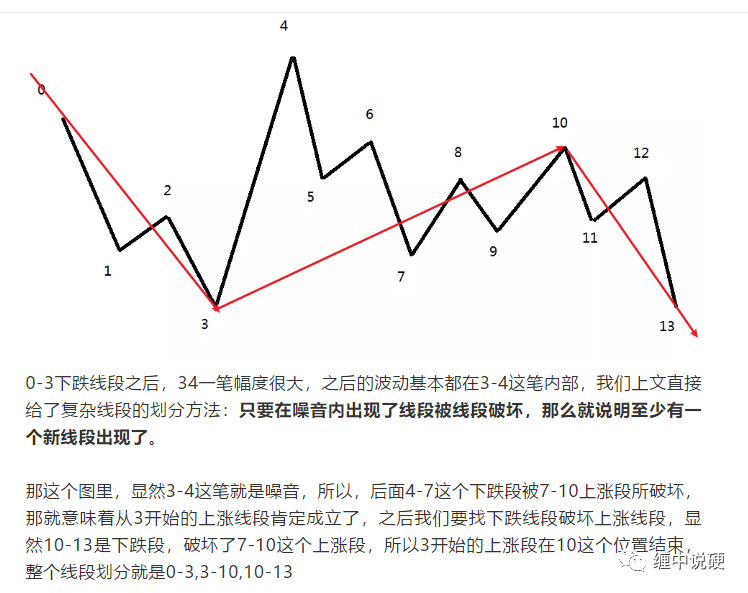
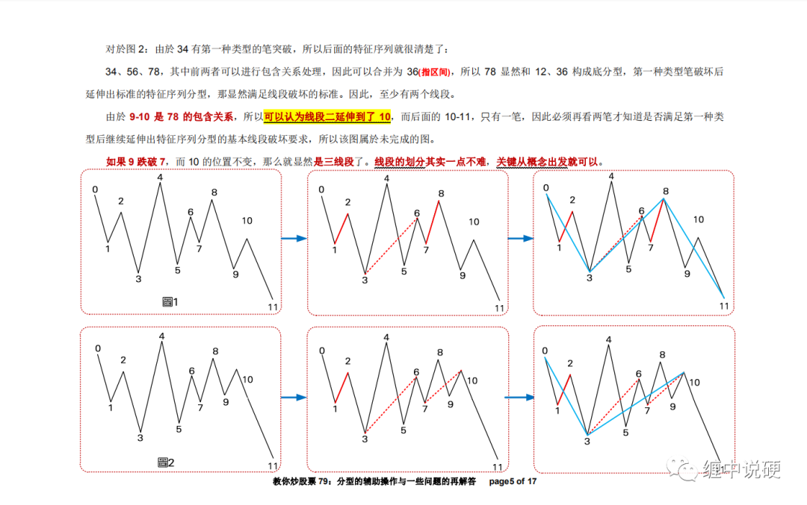

缠论基础知识，画段的最大误区
前几天公众号看到某大V说了一篇关于画段的最大误区。我喵了一眼显然大V也进入误区了。
原文的解读真的是一件很烦的事情。中午在一个缠论群讲了一会儿，这个画段的误区，结果;
A：我觉得xxx画的线段蛮有道理；
B：脑路清奇，要从其他角度角度理解这个画段：为啥不跳出要线段，结合0以前的走势，把这一部分看成一个盘整呢？
这里我一定要说一句，学习一定要实事求是!!

这是某大V的原文图：将上图划分为3个线段，分别为0-3，3-10以及10-13。
我们先不对他画段是否正确，做讨论，先直接上原文图。（以下内容为79课土匪版1106页的内容）

在上图中第一和第二行的图分别做了如下处理：
1：底分型第二元素的合并，即34与56合并，得出36
2：底分型第三元素的合并，图一中67与9-10不包含，因此不做包含处理；图二中78-9-10有包含关系，做合并处理得出7-10；
3：图一有三段线段0-3，3-8以及8-11；图二中有二段线段0-3与3-10。

回到某大V的解析图：
1：底分型第二元素合并，34与56合并，得出36，36与78合并得出38；
2：底分型第三元素合并，9-10与11-12合并得出9-12；
3：显然上图划分段位0-3以及3-12。